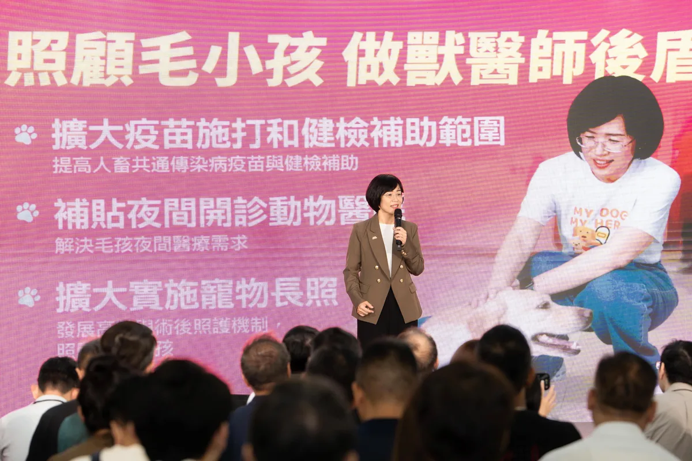
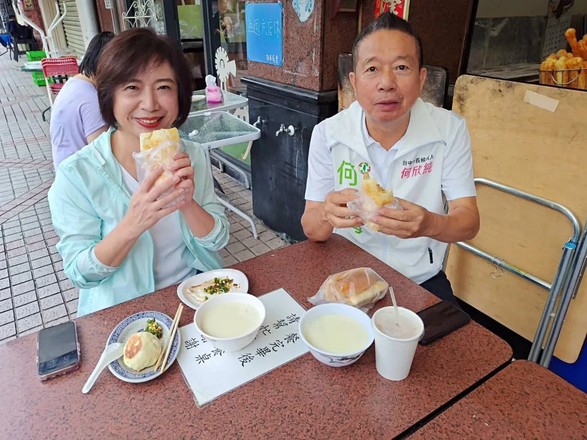
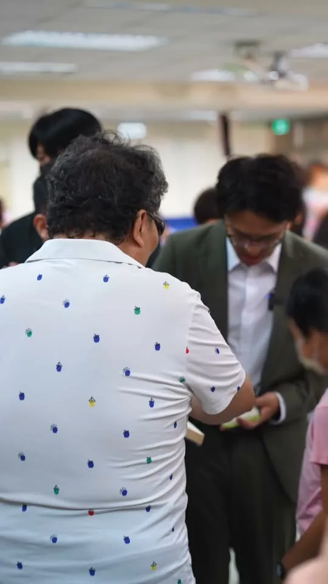
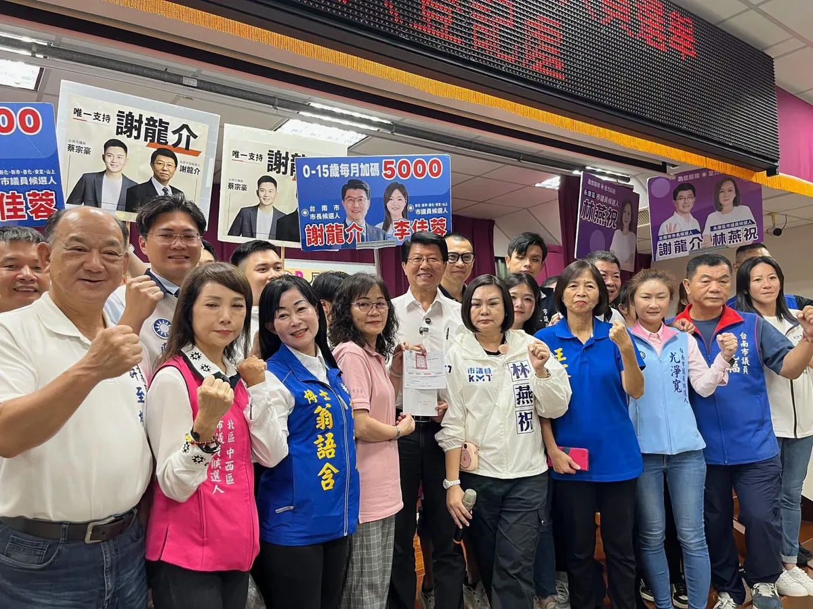
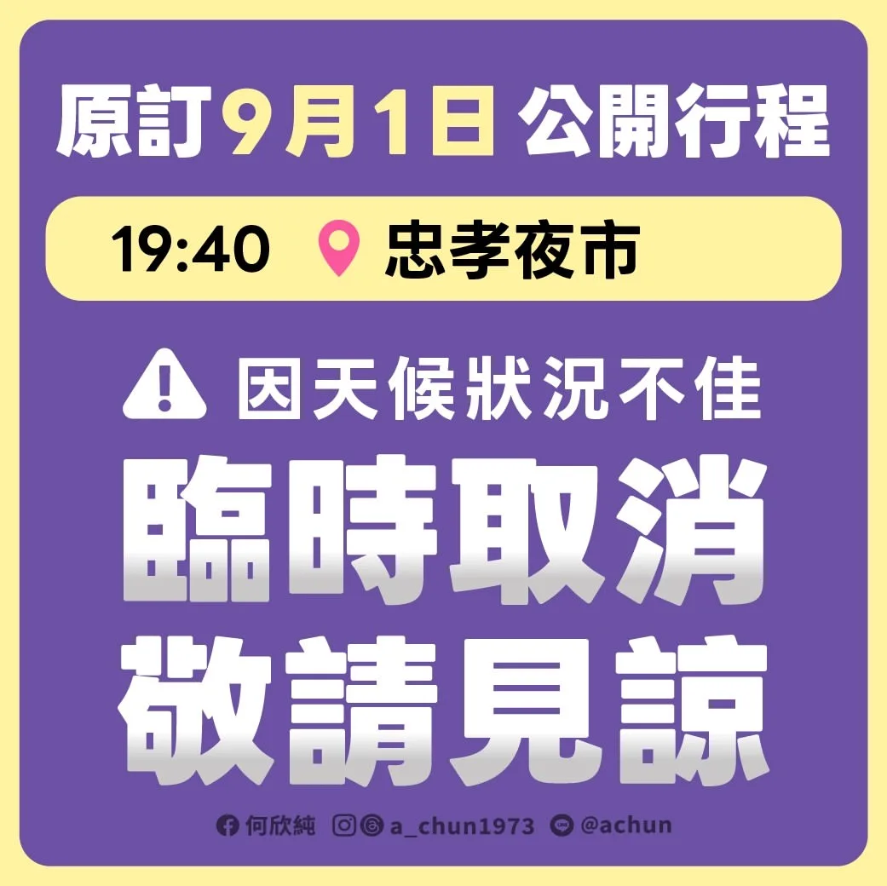
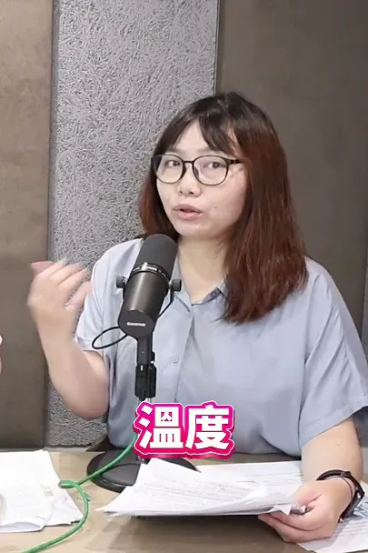
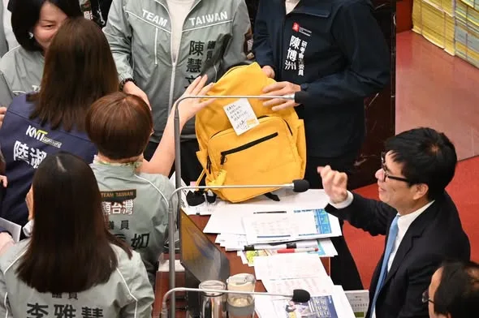
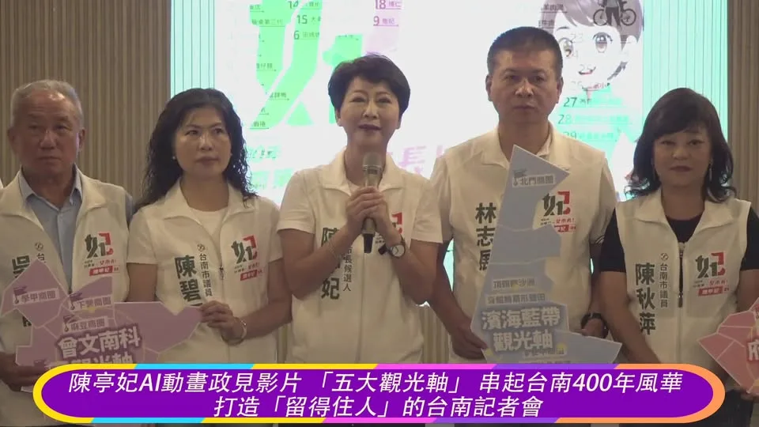
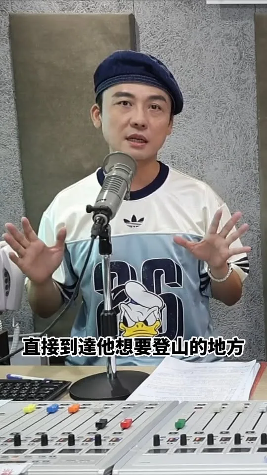

龍介今天正式登記參選台南市長！「路平、燈亮、水溝通」市民小事情就是龍介的大事情！這不正常..台南市交通罰單100件申訴有17件通過 20260901 @longmedia ｜龍介的直播
Posts
龍介今天正式登記參選台南市長！「路平、燈亮、水溝通」市民小事情就是龍介的大事情！這不正常..台南市交通罰單100件申訴有17件通過 20260901 @longmedia ｜龍介的直播
台中青年站出來！何欣純三大青年行動 青年局 青創基地 AI研習所備選
Long Jieshe officially registered today, 9/1, to run for Mayor of Tainan in 2026! Promises includ...


@su.chiaohui:巧慧當市長 打造幸福毛孩城市❤️ 謝謝非常多獸醫師及寵物產業的好朋友相挺，過去十年，我們一起在立法院精進動保制度、爭取公職獸醫師不開業獎金，為第一線留人才。 未來我們不但要持續照顧毛孩家人，也要守護獸醫師、健全產業發展。一起加油！讓新北成為最幸福、最動物友善的城市！🐶🐱🏠
就是今天2026年9月1日！龍介已正式登記參選台南市長｜謝龍介
Thank you to the people of Yunlin for your support of Chiao-Hui!


吃完早餐，要去掃市場，向市民請安問候囉！😘😘 燒餅、水煎包、半熟荷包蛋....一匙蔥花辣椒，再加上一碗溫豆漿，元氣飽滿、感謝鼓勵、迎向美麗的台中！❤❤ 南屯好豆漿店：南屯區向心南路934號

廟口那卡西繼續出發，前往燕巢區！ 今晚7點在燕巢區 #角宿天后宮廟埕廣場 (燕巢區角宿路6-1號)， 「樓頂揪樓下，作伙來聽歌！」 柯志恩 與 高雄市議員 #方信淵 #宋立彬 、參選人 #黃韻涵，邀請大家一起來聽歌聽講！ 📍時間｜9月1日（二）晚上7點開始 📍地點｜燕巢區 #角宿天后宮廟埕廣場 (燕巢區角宿路6-1號) 📍主持人｜#陳昭瑋 📍歌手｜#鳥來嬤吳敏 📍二胡｜#葉維仁 📍與會來賓｜高雄市議員 #方信淵 #宋立彬 、參選人 #黃韻涵
@prof.kochihen:四年前，我送給當年的競爭對手、如今的 @chenchimai 市長一箱麥香，逗趣的跟他說了一句：「Bye 邁 dear friend。」 當時是競爭對手，但我始終相信，選舉可以有競爭，也可以有風度。那場選舉，我們少一點攻擊、多一點善意，雖然當時我的「夢想」沒有成真，卻也成為大家印象深刻的一場戰役。 這些年，我和陳其邁市長也有不少針鋒相對、理性辯證。從市政議題到城市規劃，我們有過不同立場，也有過很多交流。 不管政黨立場為何，我們都一樣愛高雄，也都希望高雄可以更好。 今天是陳市長最後一次進行施政報告，我特別請國民黨黨團送上黃色背包，當作他的「畢業禮物」。過去我是繞著地球跑，現在也祝福他背著這個行囊，帶著大家滿滿的祝福，不管未來到世界哪個角落，都不要忘記高雄，繼續大步向前。 其實，包包裡還放了兩本書。 一本是宮崎駿電影《蒼鷺與少年》的原版小說《你想活出怎樣的人生》。希望市長走進下個人生階段時，好好想想自己想走的路，繼續為台灣、為高雄做出最好的選擇。 另一本是《不想談也沒關係》。當大家問起，誰比較適合當高雄市長時，我想，有些話其實不用急著回答。如果不方便談、「不想談，也沒關係」。


中正‧萬華 張銘祐從孩子的笑容到輔具的需求，都把地方的大小事都放在心上。一票沈伯洋、一票張銘祐，讓萬華越來越有活力，越有溫度！
何欣純競總 9/12 成立 賴清德力挺、馬戲團親子同樂 台中市長候選人、立法委員何欣純今（1）日 […] 〈 何欣純競總 9/12 成立 賴清德力挺、馬戲團親子同樂 〉這篇文章最早發佈於《 何欣純官方網站｜2026 台中市長候選人 》。

@hsiehlungchieh:今天下午，龍介在國民黨、民眾黨24位議員夥伴陪同下完成登記，正式參選台南市長！ 一路從選委會回到競選總部，看見沿途鄉親揮手加油，龍介心裡只有一個念頭：這一次，我們一定要團結起來，翻轉大台南，讓人民贏一次！ 台南已經33年沒有政黨輪替。33年，真的夠久了。 這些年，官商勾結、魚死電生、採購爭議、廢棄物亂象一件接著一件。龍介走遍基層，也聽到越來越多鄉親說：「機會給這麼久，也該換人做看看了。」 龍介站出來，就是要替台南爭一個改變的機會。給龍介四年，把積弊一件一件清掉，把市政一項一項做好，讓市政府真正站在人民這一邊。 目前台南最不能再拖的，就是少子女化。生育率落在全國後段班、六都倒數第二，這不只是生不生孩子的問題，更關係到台南未來有沒有人才、產業能不能繼續發展。 因此龍介提出全國最強婚育宅、最強生育津貼、育兒津貼每月加碼2500元的有感政策，就是要讓年輕人在台南敢結婚、敢生、養得起，也留得下來。 現在花在孩子身上的每一塊錢，不只是福利，更是在投資台南未來的人才與希望。 今天登記，只是一個開始。33年夠久了，給龍介四年，給台南一次真正改變的機會。 藍白團結，議員全壘打！

@a_chun1973:⚠️台中陰雨，氣溫也轉涼！考量天候狀況不佳，原定今晚 19:40 忠孝夜市的行程將延期辦理，造成不便請大家原諒🙏 但原訂17:30建國北黃昏市場（建國北路一段149號）的行程如期辦理！ 麻煩大家幫忙轉告、分享消息！ 大家注意安全，我們下次見❤️
來來來，樓頂招樓跤，阿母招阿爸，厝邊招隔壁🙋 何欣純競選總部成立🎉邀請各位來熱鬧～ 9/12（六）下午2點，是我的競總成立大會，當天除了有精彩的馬戲團現場演出，賴清德總統也將親自蒞臨，台中純派我們當天見！ 這裡不只是競選總部，更是大家都能走進來、坐下來、聊聊天的空間，一起交流對台中的想法。 9/12下午，我們競總見！一起為台中加油💪 📌何欣純競選總部地址：台中市南屯區五權西路二段1127號

Taipei Chiayi Residents Support Group Established: Thank you to all the folks who came from Chiay...
感謝雲林鄉親相挺巧慧！ 在新北市，有80萬雲林鄉親在這裡生活，大家一起打拚，一起讓新北持續前進。 未來，我要舉辦 #雲林日，推廣雲林的好產品、好文化，更要推動 #AI技職人才交流計畫，串連新北、雲林產官學界，讓人才交流、促進兩個城市的發展，更讓產業升級！ 我們一起努力，讓新北和雲林攜手向前，一起進步、一起贏！

行動 溫度 創新！阿純號的三大關鍵字
@a_chun1973:大家晚安🌛 明天繼續馬不停蹄，走訪台中各區和大家見面！歡迎台中純派來相會～ 📅9/1（二） 07:00 📍豐樂雕塑公園（文心南五路一段331號） 08:10 📍大進市場（大墩六街161號） 08:40 📍南屯市場（南屯路2段595號） 17:30 📍建國北黃昏市場（建國北路一段149號） 19:40 📍忠孝夜市（台中路忠孝路口） 明天見！期待和純派相遇🙌

四年前，我送給當年的競爭對手、如今的 陳其邁 Chen Chi-Mai 市長一箱麥香，逗趣的跟他說了一句：「Bye 邁 dear friend。」 當時是競爭對手，但我始終相信，選舉可以有競爭，也可以有風度。那場選舉，我們少一點攻擊、多一點善意，雖然當時我的「夢想」沒有成真，卻也成為大家印象深刻的一場戰役。 這些年，我和陳其邁市長也有不少針鋒相對、理性辯證。從市政議題到城市規劃，我們有過不同立場，也有過很多交流。 不管政黨立場為何，我們都一樣愛高雄，也都希望高雄可以更好。 今天是陳其邁市長最後一次進行施政報告，我特別請國民黨黨團送上一個黃色背包，當作他的「畢業禮物」。過去我是繞著地球跑，現在也祝福他背著這個行囊，帶著大家滿滿的祝福，不管未來走到世界哪個角落，都不要忘記高雄，繼續大步向前。 其實，包包裡還偷偷放了兩本書。 一本是宮崎駿電影《蒼鷺與少年》的原版小說《你想活出怎樣的人生》。希望市長走進下一個人生階段時，也能好好想想自己想走的路，繼續為台灣、為高雄做出最好的選擇。 另一本是《不想談也沒關係》。當大家問起，誰比較適合當高雄市長時，我想，有些話其實不用急著回答。如果不方便談、「不想談，也沒關係」。最後，就讓高雄人用手中的選票，選出自己認為最適合帶領高雄的人。 民主政治最好的樣子，就是有競爭、有選擇，也能在競爭之中保有彼此的尊重。政黨可以不同，但我們共同愛著的高雄，只有一個。 這週，我也將正式登記參選高雄市長。 四年前，我說過我會留下來。這些年，我選擇留在高雄，從一個北漂的歸人，一步一步走進高雄的大街小巷，認識這座城市、聽見鄉親的聲音，也讓自己成為一個以高雄為榮的高雄人。 現在，我想把這份努力繼續延續下去。 高雄下一任市長，重要的從來不是掛著什麼顏色、屬於什麼派系，而是誰真正了解高雄、願意承擔責任，也有能力帶著這座城市繼續往前走。 我會繼續站在高雄，為高雄努力。 這一次，希望高雄把城市的未來，交給真正能帶領高雄大步向前的人。
從首投族手中接下市長參選登記表，我承載的是青年對台中的期待。謝謝「青純力應援團」給我許多建言和鼓勵！ 台中是一座屬於年輕人的城市，我認為青年朋友在台中應該要有舞台、有機會，更要有未來！因此我提出三項青年行動： 🎯成立 #青年局 🎯打造「山海屯城青創基地／創客中心」 🎯成立「AI創新人才研習所」 我會跟年輕朋友一起拚、一起衝，讓台中這座城市持續欣欣向榮！ #心存大台中 #市長換欣_台中創新

@zenolai:高雄隊，正式登場！ 高雄有山海河港，幅員遼闊，每個地區的生活樣貌與需求不盡相同。要把高雄顧好，需要熟悉地方的議員與參選人，讓鄉親的聲音有人聽見、地方的問題有人處理。 我們來自各地，現在把彼此的經驗和力量集結，組成一支守護市民、為高雄打拚的團隊。 每一張「高雄隊球員卡」，都代表一份對地方的責任與承諾。有人已在議會累積多年的問政經驗；有人帶著新的想法，準備為地方多做一點事。每個選區，都是我們要全力守好的主場，大家各自發揮所長、彼此支援，每位隊員都缺一不可。 明天，我會和高雄隊所有夥伴一起出發，接下高雄發展的關鍵第四棒，守護這幾年累積的成果、延續城市進步，為高雄拚出更好的未來。 #高雄大聯盟
今天下午，龍介在國民黨、民眾黨24位議員夥伴陪同下完成登記，正式參選台南市長！ 一路從選委會回到競選總部，看見沿途鄉親揮手加油，龍介心裡只有一個念頭：這一次，我們一定要團結起來，翻轉大台南，讓人民贏一次！ 台南已經33年沒有政黨輪替。33年，真的夠久了。 這些年，官商勾結、魚死電生、採購爭議、廢棄物亂象一件接著一件。龍介走遍基層，也聽到越來越多鄉親說：「機會給這麼久，也該換人做看看了。」 龍介站出來，就是要替台南爭一個改變的機會。給龍介四年，把積弊一件一件清掉，把市政一項一項做好，讓市政府真正站在人民這一邊。 目前台南最不能再拖的，就是少子女化。生育率落在全國後段班、六都倒數第二，這不只是生不生孩子的問題，更關係到台南未來有沒有人才、產業能不能繼續發展。 因此龍介提出全國最強婚育宅、最強生育津貼、育兒津貼每月加碼2500元的有感政策，就是要讓年輕人在台南敢結婚、敢生、養得起，也留得下來。 現在花在孩子身上的每一塊錢，不只是福利，更是在投資台南未來的人才與希望。 今天登記，只是一個開始。33年夠久了，給龍介四年，給台南一次真正改變的機會。 藍白團結，議員全壘打！ 翻轉大台南，人民贏一次！
巧慧當市長 打造幸福毛孩城市❤️ 謝謝非常多獸醫師及寵物產業的好朋友相挺，過去十年，我們一起在立法院精進動保制度、爭取「公職獸醫師不開業獎金」，為第一線留人才。 未來我們不但要持續照顧毛孩家人，也要守護獸醫師、健全產業發展！今天我特地向大家報告我的政見： 🐶毛孩醫療再升級 擴大補助人畜共通傳染病 #疫苗施打與健檢、認養毛孩終身補助，補貼 #夜間開診 動物醫院，提升夜診量能，並且擴大實施 #寵物長照，照顧高齡毛孩。 🐱城市環境更友善 推動 #友善寵物專車 標章與補貼，增設寵物公園、強化遮蔭與飲水等設施，並建置「公辦檢測實驗室」把關食安。 🏠動物之家助認養 #提升預算 強化救援量能、導入行為訓練等專業服務，同時獎勵寵物業者成為「認養媒合中心」，提升整體認養率。 一起加油！讓新北成為最幸福、最動物友善的城市！
@a_chun1973:來來來，樓頂招樓跤，阿母招阿爸，厝邊招隔壁🙋 何欣純競選總部成立🎉邀請各位來熱鬧～ 9/12（六）下午2點，是我的競總成立大會，當天除了有精彩的馬戲團現場演出，賴清德總統也將親自蒞臨，台中純派我們當天見！ 這裡不只是競選總部，更是大家都能走進來、坐下來、聊聊天的空間，一起交流對台中的想法。 9/12下午，我們競總見！一起為台中加油💪 📌何欣純競選總部地址：台中市南屯區五權西路二段1127號
@su.chiaohui:感謝雲林鄉親相挺巧慧！ 在新北市，有80萬雲林鄉親在這裡生活，大家一起打拚，一起讓新北持續前進。 未來，我要舉辦「雲林日」，推廣雲林的好產品、好文化，更要推動「AI技職人才交流計畫」，串連新北、雲林產官學界，讓人才交流、促進兩個城市的發展，更讓產業升級！ 我們一起努力，讓新北和雲林攜手向前，一起進步、一起贏！


陳亭妃AI動畫政見影片 「五大觀光軸」 串起台南400年風華 打造「留得住人」的台南

我高中讀的是位於城區的台中女中，城區承載著我青春歲月中最美好的回憶。 可惜的是，城區這些年逐漸走向沒落，如何讓城區重新找回往日魅力，一直是我心中的目標。 未來我會參考英國、歐洲城市的經驗，活化城區的文物與歷史建築，轉型為文化觀光亮點，讓老城區重新熱鬧起來！ #心存大台中 #市長換欣_台中創新
四年前，我送給當年的競爭對手、如今的陳其邁市長一箱麥香，逗趣的跟他說了一句：「Bye 邁 dear friend。」 當時是競爭對手，但我始終相信，選舉可以有競爭，也可以有風度。那場選舉，我們少一點攻擊、多一點善意，雖然當時我的「夢想」沒有成真，卻也成為大家印象深刻的一場戰役。 這些年，我和陳其邁市長也有不少針鋒相對、理性辯證。從市政議題到城市規劃，我們有過不同立場，也有過很多交流。 不管政黨立場為何，我們都一樣愛高雄，也都希望高雄可以更好。 今天是陳其邁市長最後一次進行施政報告，我特別請國民黨黨團送上一個黃色背包，當作他的「畢業禮物」。過去我是繞著地球跑，現在也祝福他背著這個行囊，帶著大家滿滿的祝福，不管未來走到世界哪個角落，都不要忘記高雄，繼續大步向前。 其實，包包裡還偷偷放了兩本書。 一本是宮崎駿電影《蒼鷺與少年》的原版小說《你想活出怎樣的人生》。希望市長走進下一個人生階段時，也能好好想想自己想走的路，繼續為台灣、為高雄做出最好的選擇。 另一本是《不想談也沒關係》。當大家問起，誰比較適合當高雄市長時，我想，有些話其實不用急著回答。如果不方便談、「不想談，也沒關係」。最後，就讓高雄人用手中的選票，選出自己認為最適合帶領高雄的人。 民主政治最好的樣子，就是有競爭、有選擇，也能在競爭之中保有彼此的尊重。政黨可以不同，但我們共同愛著的高雄，只有一個。 這週，我也將正式登記參選高雄市長。 四年前，我說過我會留下來。這些年，我選擇留在高雄，從一個北漂的歸人，一步一步走進高雄的大街小巷，認識這座城市、聽見鄉親的聲音，也讓自己成為一個以高雄為榮的高雄人。 現在，我想把這份努力繼續延續下去。 高雄下一任市長，重要的從來不只是掛著什麼顏色、屬於什麼派系，而是誰真正了解高雄、願意承擔責任，也有能力帶著這座城市繼續往前走。 我會繼續站在高雄，為高雄努力。 這一次，希望高雄把城市的未來，交給真正能帶領高雄大步向前的人。
「青純力應援團」成軍 何欣純推 AI 工具補助挺青年 台中市長候選人、立法委員何欣純今（31） […] 〈 「青純力應援團」成軍 何欣純推 AI 工具補助挺青年 〉這篇文章最早發佈於《 何欣純官方網站｜2026 台中市長候選人 》。
從首投族手中接下市長參選登記表，我感受到的，是年輕世代對台中的期待。謝謝「青純力應援團」給我滿滿的建言與鼓勵❤️ 台中應該是一座讓年輕人有舞台、有機會、更有未來的城市！因此，我提出三項青年行動： 🎯 成立 #青年局 🎯 打造「山海屯城青創基地／創客中心」 🎯 成立「AI創新人才研習所」 我要和年輕朋友一起拚、一起衝，用年輕的力量帶動城市向前，讓台中持續欣欣向榮 🌱✨